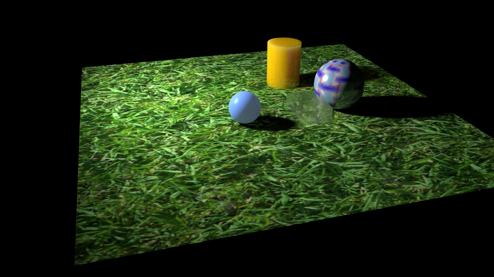
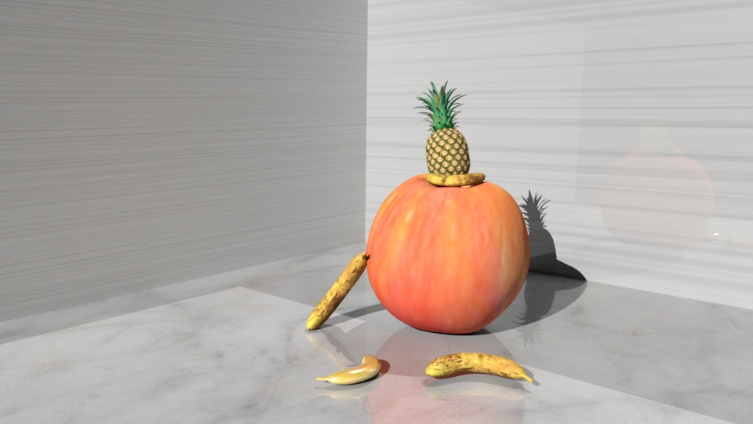
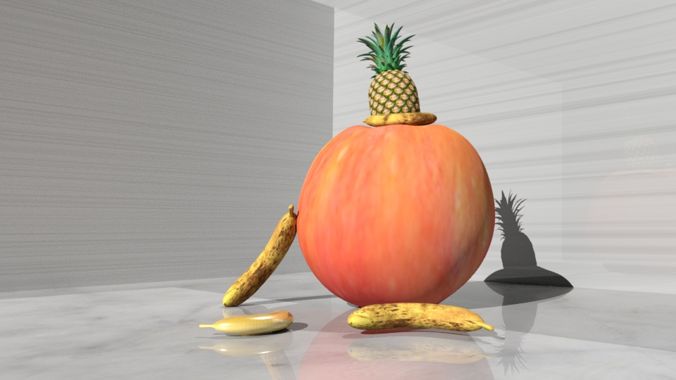
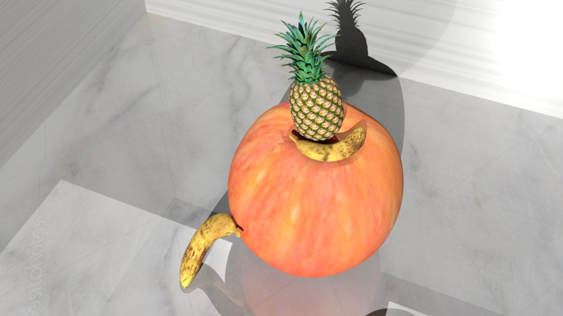

I rendered this set of photos in Maya. I used a scanner to scan my friend for body shapes and then used Maya to add the wing.My definition of prosthesis is a movement and form that can help me complete what my physical body cannot, so I decided to create a wing for my model. When I was young, I was envious of Doraemon's bamboo dragonflies (Japanese animation), which took them to various places. Therefore, in my concept, I also want to have my own “bamboo dragonfly”. So I created a pair of big wings. It can take me anywhere I want to go. The wings are tucked into an oval pouch. This is the source of my inspiration. I want to make the prosthesis can be put and put freely, and be controlled by people's manual in different environments and at different times.
Play with textures




I learned to apply texture for the objects.
Maya animation (Digital Video) by Mengshi Maya rendering images and Premier Pro 960 × 540
The first time animation by using Maya rendering images and editing in Premier Pro for a better result.